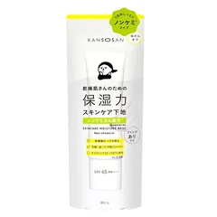

保湿を重視して、UVカットも兼ねたい人

乾燥さん
保湿力スキンケア下地 30g
30g
¥1,297税込・出典掲載価格
選び方と声
- 選ぶ条件：保湿を重視して、下地とUVカットを1本で済ませたい人。商品ページの説明では、潤い特化型スキンケア下地・UVカット・オールインワン
- 塗り心地がベタベタ・モロモロしない、乾燥が気にならなくなった、という声が多い
気になる声気になる点：少し肌に重い感じがする、汗ばむ季節は控えた、という声がある。冬向けの一本として選ぶ人が多い
販売価格・容量・送料はリンク先でご確認ください